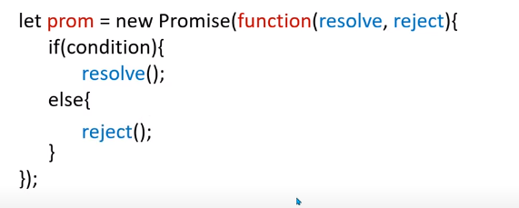
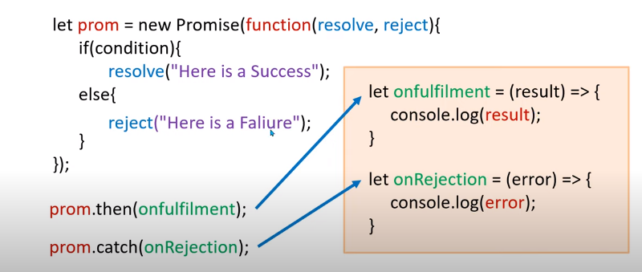

Promise is method in advance Javascript. Before moving toward any heavy definition let's understand Promise with an example. Suppose a guy named XYZ asked his friend to meet at a Restaurant and his friend promised him that they will meet tomorrow. The Promise taken by the friend of XYZ can be divided into three stages -
1. Pending - Till the day arrive the Promise will remain Pending.
2. Fulfiled - If XYZ meets his friend tomorrow, the promise will get fulfiled.
3. Rejected - If they can't meet, the promise will get rejected.
In Javascript, the promise method works like the above example. In this method, we basically specify a condition and on the basis of that condition, two outcomes are possible. Either the condition will get fulfiled (we can say the condition is resolved) or the condition will get failed i.e. the condition is rejected.
If the condition of a problem gets resolved, then we can use then() function. In then() function we use it to define what we will do if the condition gets fulfiled. And if the condition of a problem gets rejection, then we use catch() function. In catch() function we define what will be our next decision or step if the condition gets rejected. Both then() and catch() functions are call back function. They are inbuilt functions. These functions will automatically be called when we call resolve() or reject() function.

let prom = new Promise()
// in the variable, define a method and the variable becomes the object of the Promise
let prom = new Promise(function(){ });
// A function defined in the Promise method
let prom = new Promise(function(resolve, reject){ });
// two parameters are taken inside the function i.e. resolve and reject
// if the function gets resolved then we call a function named resolve and if function gets rejected , reject function will call

if condition is fulfiled then resolve will called else reject will called.

If the condition gets satisfied and we call the resolve function then automatically then() function will be called else we call the reject function and then automatically catch() function will be called.